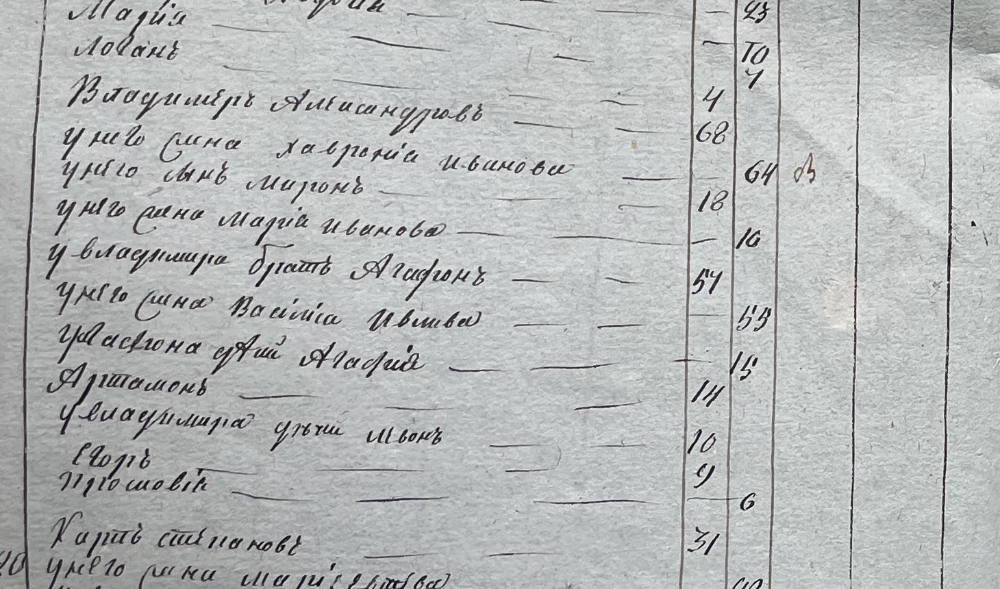
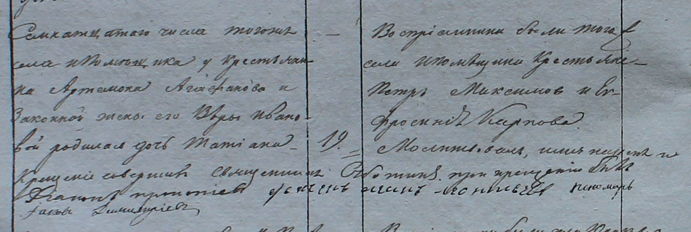
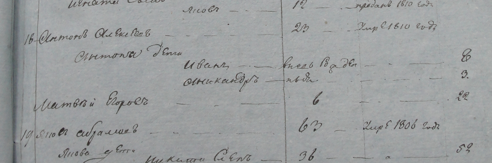
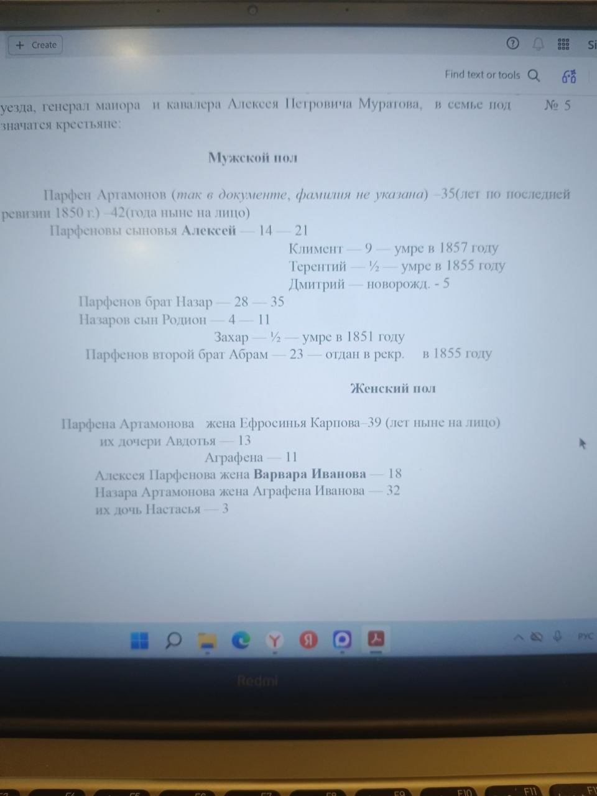

Как читать дерево
Цвет карточки показывает качество сведений. Пунктирная линия означает связь, которую ещё нужно подтвердить. Семейные сообщения и выписка ревизии отмечены отдельно от прочитанных оригиналов. Отчество само по себе не устанавливает конкретного отца.
Структура связей — основной рабочий вид
Сначала фиксируем связь словами, потом сверяем её с документом и только затем показываем на схеме. Стрелка означает родительскую связь; «брат/сестра» означает один поколенческий уровень и не является линией от родителя.
1858Поколение Парфена: братья, не дети друг друга
Общий отец Парфена, Назара и Абрама пока не установлен. Поэтому между этими карточками нет родительской линии.
1839–1858Дети Парфена / Порфирия
- Парфен → Авдотья Парфенова 13 лет в 1858, по выписке
- Парфен → Алексей Порфирьевич + Варвара брак 1857; Алексей — сын Парфена по сопоставлению
- Парфен → Агриппина Порфирьевна дочь Порфирия в брачной записи 1864
- Парфен → Климент 9 лет в 1850, умер в 1857
- Парфен → Терентий ½ года в 1850, умер в 1855
- Парфен → Дмитрий 5 лет в 1858, по выписке
- Парфен → Анна рождение 1839, мать Ефросинья Карпова
1857–1896Потомки Алексея и Варвары
- Алексей + Варвара → Сергей близнец, 1867
- Алексей + Варвара → Яков Алексеевич близнец, 1867
- Алексей → Максим Алексеевич высокая вероятность: один подходящий Алексей в ревизии 1858; поручитель 1892
- Назар → Родион и Анастасия 11 лет и 3 года в 1858
- Максим → Андрей прямо указан сыном Максима в записи 1896
1904–середина XX векаПоздняя семейная ветвь
- Максим → Николай Максимович, 1906 высоковероятная семейная связь; метрическая запись не найдена
- Николай Максимович + Анна Ивановна → Александра, Николай, Анатолий, Владимир семейные сведения
- Александра + Яков → Нина и Галя Яков Андреевич, 1914; семейные сведения
- Николай + Лида → Татьяна + Владимир → Денис отдельная семейная ветвь
- Николай + Лида → Володя + Оля → Аня и Люда отдельная семейная ветвь
- Анатолий, 1939 → Ольга Рязань
- Владимир → Лена, Володя и Витя Лена — Москва
1823–1836Отдельная семья Агафона
Агафонская семья не соединяется с Парфеном: документального родства нет.
Годы не установленыНе подключать без новых документов
Аграфена из SVG, Матрёна, Григорий Владимирович и боковая ветвь Захаровых остаются отдельными кандидатами. Их нельзя присоединять к основной линии только по имени, отчеству или соседству в записи.
Графический обзор
Это вторичное изображение. При расхождении с реестром выше правильным считается реестр связей.
Показать большой SVG-обзор
Проверка связей · 13 октября 2026
Проверены связи, подписи и даты на схеме по новым оригиналам, прежним разборам, семейным сообщениям и присланной выписке. Это не полный повторный просмотр всех метрических книг. Выписка 1858 года — фотография набранного текста, а не рукописного листа.
| Связь | Статус | Основание и поправка |
|---|---|---|
| Агафон → Артамон, 14 лет | ✅ Прочитано в оригинале 1823 | Двор №27, IMG_5265. Жена Агафона — Василиса Иванова. Александрович — восстановление по брату, вероятно. |
| Артемон Агафонов → Татьяна | ✅ Прочитано в оригинале 1836 | Рождение 17 января, крещение 19 января; мать Вара[?] Иванова, вероятно Варвара. |
| Артамон 1823 = Артемон 1836 | 🟡 Вероятно | Имя, отчество и возраст подходят; непрерывной записи семьи нет. |
| Агафон → Артамон и основная линия | ❌ Не соединено | Артамону 14 лет в 1823; возраст не подтверждает отцовство Парфена и Назара. Семья показана отдельной ветвью до проверки ревизии 1834 года. |
| Парфен ↔ Назар ↔ Абрам | 🟡 По вторичной выписке 1858 | Назар и Абрам названы братьями. Абрам убран из ряда детей Парфена. Оригинал нужен для подтверждения. |
| Парфен → Дмитрий / Климент / Терентий / Авдотья | 🟡 По выписке 1858 | Дмитрию 5 лет, Авдотье 13 в 1858; Клименту 9 в 1850, умер 1857; Терентий ½ года в 1850, умер 1855. Даты исправлены. |
| Парфен → Аграфена | 🟡 По выписке 1858 | Дочь, 11 лет. Аграфена Артамоновна из SVG — другая неподтверждённая подпись; объединение не сделано. |
| Назар → Родион / Настасья | 🟡 По выписке 1858 | 11 и 3 года соответственно. Родион — ориентир для поиска Андрея, Николая и Фёдора Родионовичей; их братство не доказано. |
| Назар + Агриппина / Аграфена | ❓ Противоречие имён и возраста | Метрика 1840: Агриппина Иванова, 16; выписка 1858: Аграфена Иванова, 32. Не считать одним именем или доказанным вторым браком. Назар: около 19 в 1840 против 35 в 1858. |
| Порфирий = Парфен | 🟡 Сопоставление записей | 1837 Алексей в Юракове, 1839 Анна в Алексеевке; совпадает Ефросинья Карпова. Привязка между 1837–1839, а не точная дата переезда. |
| Алексей + Варвара → Сергей / Яков | ✅ Ранее прочитанные метрики | Близнецы 8 октября 1867; брак родителей 1857. Эти оригиналы заново в этом обновлении не перечитывались. |
| Алексей → Максим → Николай 1906 | 🟢 Высокая уверенность | В ревизии 1858 в деревне указан один подходящий Алексей; Максим позднее назван Алексеевичем, был поручителем Якова в 1892, а записи его семьи согласуются с этим отчеством. Прямая метрика рождения Максима не найдена. Исповедные ведомости после 1851 отсутствуют, поэтому специальный поиск состава семьи по ним закрыт. |
| Дмитрий → Владимир Дмитриевич | 🟡 Рабочая гипотеза | Свидетель на браке 1896 подтверждает присутствие Владимира, но не устанавливает конкретного Дмитрия как отца. |
| Матрёна → семья Парфена | ❓ Источник не установлен | Удалена линия от Парфена. Матрёну Максимовну и Марию Филиппову из восприемников не объединять. |
| Яков Андреевич 1914 → Андрей Родионович | ❓ Не подтверждено | Запись о Фёдоре и восприемнике Якове не является записью рождения деда. Нужна метрика с его родителями. |
| Серганов Григорий Владимирович → Первая мировая | ✅ Военная запись | Строка №3 на присланном списке: православный, холостой, вероятно Рязанская губерния/Пронский уезд; отмечен как раненый, дата читается как 19 ноября. Родство с Владимиром Сергановым не установлено. |
| Поздние поколения, ветвь Фёдора из SVG | ❓ Семейные сведения / схема | Сохранены с пунктирными связями. Документальное подтверждение каждого поколения остаётся открытым. |
| Антон Алексеев / «Серганов Ефим», 1811 | Старые чтения сняты | DSC00086: Антон, не Артамон. DSC00078: «Степановы дети», Ефрем[?]; фамилия Серганов не подтверждается. |
Новая находка: Агафон и его сын Артамон
1823, Юраково, двор №27: Агафон, 54 года; жена Василиса Иванова, 53; дети Агафий[?], 15, и Артамон, 14. Выше — Владимир Александров, брат Агафона. Отчество Агафона «Александрович» вероятно, но в его строке не повторено.
1836: Артемон Агафонов и Вара[?] Иванова — родители Татьяны, родившейся 17 января, крещённой 19 января. Восприемники Пётр Михайлов и Ефросинья Карпова. Совпадение двух Артамонов вероятно; принадлежность к основной ветви не доказана.
Артамон, которому в 1823 году было 14 лет, родился приблизительно в 1808–1809 году. Его возраст не согласуется с отцовством Парфена около 1815–1816 года рождения. Эта семья показана отдельно от основной линии.
Оригинал 1823: семья Агафона


IMG_5265; Ф.627, Оп.83, Д.93 — шифр по обложке. Заголовок села Юракова.

Оригинал 1836: рождение Татьяны


1836 МК Юраково (03).JPG; Ф.627, Оп.247, Д.87 — по названию комплекта.
Исправление 1811: Антон Алексеев


DSC00086.JPG. Прежнее чтение «Артамон Алексеев» отменено; принадлежность листа к селению сверять по заголовкам.
Вторичная выписка 1858: братья и возраста


Семья №5 по набранному тексту. Архивный шифр этого листа не подтверждён. Аграфена и Агриппина остаются разными чтениями до оригинала.
Документы и прежние находки
- Исправление 1811: на снимке DSC00086, двор №18, читается Антон Алексеев, умерший в 1810 году. Прежний узел «Артамон Алексеев» снят. Год рождения нашего Артамона пока не установлен.
- В ревизии 1858 года записан 🪵 Парфен Артамонович с женой Ефросиньей Карповой и сыном 🛡️ Алексеем; рядом проходят 🪨 Назар и 🧱 Абрам Артамонович.
- В метрической записи 1857 года 🛡️ Алексей записан как Алексей Порфирьев; его жена — 🌹 Варвара Ивановна.
- В 1867 году у 🛡️ Алексея и 🌹 Варвары записаны близнецы ⚓ Сергей и 🪶 Яков, оба родились 8 октября.
- В 1892 году 🪶 Яков Алексеевич женился на Дарье Васильевне Наумкиной; 🔨 Максим Алексеевич указан поручителем.
- В 1896 году найдены записи о 🎈 дочери Максима, 🧑 Андрее и 🎀 дочери Якова; в записи дочери Максима жена отца читается как Елена Дмитриевна.
- В брачной записи №8 от 16 февраля 1864 года Агриппина Порфирьевна названа дочерью Порфирия Артамонова: ей 17 лет, жениху Самсону Феофановичу — 18. Фамилия Серганова в самой записи не указана; связь с ветвью устанавливается через Порфирия.
- В 1840 году 🪨 Назар Артамонович вступил в первый брак с Агриппиной Ивановной: запись №17 от 3 ноября, Назару около 19 лет, Агриппине 16. Оба жили в Алексеевке; в записи они названы крепостными крестьянами владения генерала Муратова. Возраст Назара даёт ориентир рождения около 1820–1821 годов.
- В 1839 году у Парфена/Порфирия Артамонова и Ефросиньи Карповой родилась дочь Анна; в 1837 году у пары в Юракове записан сын Алексей. Совпадение матери поддерживает вариант Порфирий/Парфен и возможный переезд семьи между Юраковом и Алексеевкой.
- По семейному сообщению, жена 🕰️ Николая Максимовича — Анна Ивановна Барабанова, 1904 г. р. В деревне было несколько семей Барабановых, поэтому её конкретная родственная линия пока не установлена документально.
- Перепроверка страницы 50: две Евдокии — разные записи; Максим в них не подтверждён. Мария Филиппова Серганова указана восприемницей второй записи.
- Запись об умершей на фото 07, вероятно, относится к жене Алексея Порфирьевича; имя предварительно читается как Агриппина[?], а не Евдокия.
- Дмитрий в выписке ревизии — сын Парфена, 5 лет в 1858 году, ориентировочно 1852–1853 года рождения. «Новорожд.» стоит в предыдущей графе; считать его рождённым в 1858 году нельзя. Владимир Дмитриевич — отдельная гипотеза до нахождения записи с родителями.
- В метрической книге браков за 1896 год 🧿 Владимир Дмитриевич указан среди свидетелей брака 🧑 Николая Родионовича Серганова. Это подтверждает его присутствие во взрослом возрасте, но ещё не доказывает отцовство Дмитрия.
- По поздним семейным сведениям: 🌺 Александра → 🦋 Нина; дети Нины — 🧶 Оксана и 🧍 Александр; дочь Оксаны — 🍼 Анна. Кроме Нины у Александры есть дочь 👩 Галя; у Гали был муж 🧔 Женя, он умер; их дочь 👩 Наташа, у Наташи дочь 👧 Катя. Эта ветка связана с Рязанью.
- В той же поздней ветке: 📘 Николай Серганов — брат Александры, жена 👩 Лида; их дочь 🎨 Татьяна Серганова [?] и её муж 👨 Владимир [?], их сын 🧑 Денис [?]. Отдельная ветка тех же Николая и Лиды: 🧑 Володя + 👩 Оля [?], их дочери 👧 Аня Серганова [?] и 👧 Люда Серганова [?]. ⚙️ Анатолий Серганов [?] («дядя Толя») — брат Александры, 1939 года рождения; его дочь 🌼 Ольга живёт в Рязани. У 🚲 Владимира Серганова [?] дети: 👩 Лена (Москва), 🧑 Володя и 🧑 Витя.
- Семейное сообщение: 🧓 Яков Андреевич Серганов (1914?, Алексеевка) — муж 🌺 Александры; его сестра 👩 Варвара Серганова теперь показана рядом отдельной карточкой. В скачанной папке нет сканов после 1906 года. Для поиска нужны ГАРО, Ф.627, Оп.262, Д.182 (1907–1913) и Д.183 (поздний комплект с пометкой 1915; в указателях также видны 1917–1918). Родители и архивная запись пока не найдены.
- В отдельном семейном SVG-фрагменте видна боковая ветвь с фамилией Захаров: 🪴 Ирина Захарова → 🧑💼 Александр Захаров → 🛹 Артём и 🏖️ Даниил Захаровы. Это семейная схема, её связи требуют документальной сверки.
- На присланном развороте записи о рождении рабоче читается 👦 Феодоръ (Фёдор): отец — Андрей Родионов Серганов (современное чтение: Андрей Родионович), мать — Анисия[?] Фёдорова. Яков указан в графе восприемников, поэтому это не запись о рождении Якова и не подтверждение, что он отец ребёнка. Год и полные имена восприемников по этому общему снимку требуют проверки.
- На странице рождений за 1915 год в родительской графе читается: Иван Серганов и его законная жена Александра Григорьевна. Ребёнок и точная связь этой пары с основной ветвью по общему снимку пока не установлены.
- На присланном списке участников Первой мировой в строке №3 читается Серганов Григорий Владимирович: православный, холостой, вероятно Рязанская губерния/Пронский уезд; отмечен как раненый, дата — вероятно 19 ноября. С существующим Владимиром Сергановым пока не соединяем.
Догадки и боковые ветви
- В 1888 году 🧩 Пётр Антонович Серганов вступил в брак с женщиной из семьи Зотовых. Свидетелями записаны Никита Пантелеевич Серганов, 🪶 Яков Алексеевич Серганов и Ефрем Никитич.
- 🪶 Яков Алексеевич в этой записи может быть тем же Яковом, который родился в 1867 году у 🛡️ Алексея и 🌹 Варвары. Совпадение имени и отчества выглядит убедительно, но нужны проверка возраста, села и супруги.
- Пётр Антонович, Никита Пантелеевич и Ефрем Никитич пока отмечены как отдельная боковая ветвь. Свидетельство на браке показывает присутствие людей, но само по себе не доказывает их родство с основной ветвью.
- На дальнем фото записи о смерти за 1888 год возможно читается «... Назарова[?] Серганова[?], сын Георгий[?]». Осторожная гипотеза: 🪨 Назар → неизвестный сын → возможно 👦 Георгий. Связь с нашим Назаром пока не установлена; нужны даты слева и возраст у корешка на крупном оригинале.
- 👦 Фёдор Андреевич из записи о рождении — отдельный человек, не тот же, что возможный поручитель Фёдор Родионович. Андрей Родионович, Николай Родионович и Фёдор Родионович могут относиться к одной семье Родиона, но братство пока не доказано. Крёстный Яков по текущему чтению имеет другую фамилию (возможно, Захаров), поэтому его нельзя автоматически отождествлять с дедом пользователя.
- 17 января 1836 года родилась Татьяна у Артемона Агафонова и Вары[?] Ивановой (вероятно, Варвары); крещение 19 января. Восприемники — Пётр Михайлов и Ефросинья Карпова. Возможное совпадение этой Ефросиньи с женой Парфена не доказывает родства. Артамон Никифоров из соседнего двора 1823 года — отдельный человек.
Что проверять дальше
Главная неопределённость — более ранний отец Парфена, Назара и Абрама. Семья Агафона и Артамона показана отдельно и не соединена с основной линией: возраст Артамона не согласуется с отцовством Парфена около 1815–1816 года рождения. Связь Алексей → Максим теперь считается высоковероятной по совокупности ревизии 1858 и поздних метрических свидетельств; отдельный запрос по исповедным ведомостям закрыт, поскольку последняя ведомость Юракова относится к 1851 году.
- Ревизия 1834 года — искать отца Парфена, Назара и Абрама и проверить состав семьи до 1858 года; прежний ориентир Ф.129, Оп.32, Д.91 сначала сверить по описи.
- Рукописный оригинал семьи №5 из выписки 1858 года — проверить Алексея, Назара, Абрама, возраста и привязку к населённому пункту.
- Более ранние ведомости и ревизии — после 1834 года переходить к 1823, 1811 и 1744 для поиска отца Парфена.
- Документ на 🕰️ Николая Максимовича 1906 года — проверить родителей при наличии подходящей метрической книги.
- Метрическая запись о браке 🔨 Максима — дополнительная проверка, не главный незакрытый вопрос.
- Полная запись 1896 года о 🎈 дочери Максима — дочитать имя матери и восприемников.
- Запись рождения Матрёны Максимовны — не смешивать её с Марией Филипповой Сергановой.
- Метрическая запись о рождении 🧿 Владимира Дмитриевича — найти прямое указание на Дмитрия как отца.
- Найти более старшего Артамона: ведомость 1823 года уже дала отдельную семью Агафона; её не соединять с Парфеном без прямого документа.
- Исповедная ведомость 1744 года — смотреть после проверки 1811/1823/1834 для поиска более ранних поколений.
- Метрическая запись о рождении 🛡️ Алексея за 1837 год — уточнить вариант «Парфенович / Порфирьевич».